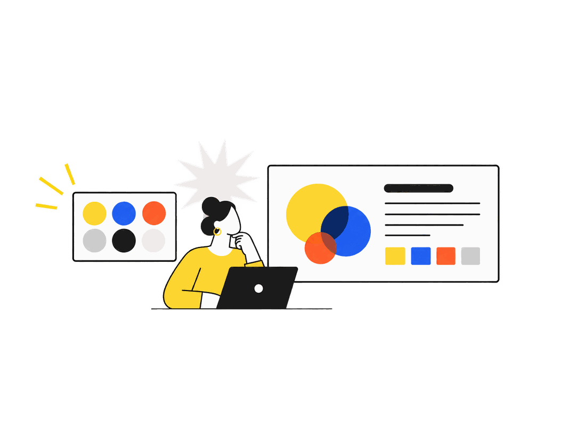
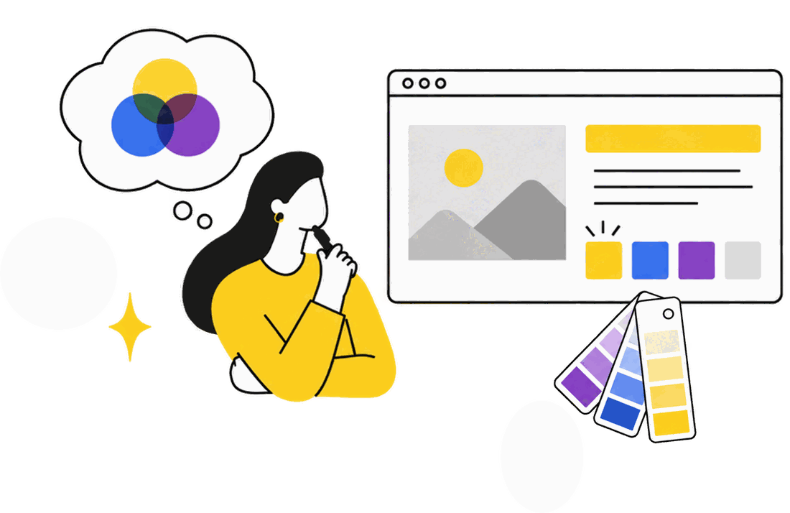
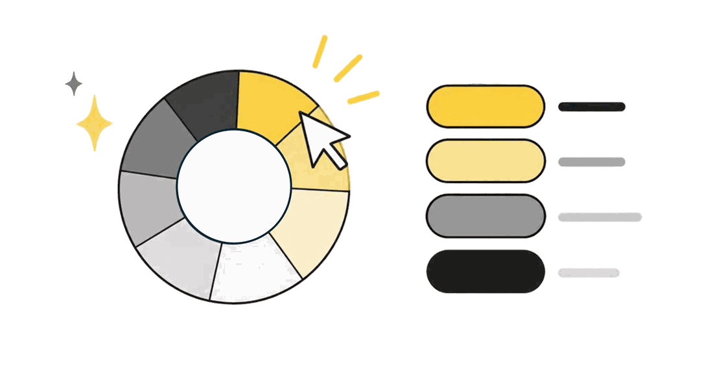
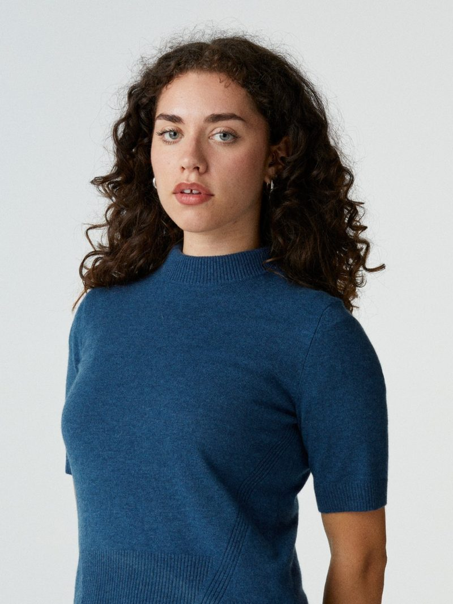

Martedì 6 ottobre 2026 12:00 – 13:00 CEST
Il colore non è decorazione: è la prima cosa che il cervello della tua audience elabora, prima ancora delle parole. In un'ora vediamo come sceglierlo seguendo la metodologia Lean Presentation Design.

Ti arriva il link Teams via email, più la registrazione della sessione.
Scegli la tua sessione
Cosa ti porti a casa
Durante il live condividiamo con tutti i partecipanti i materiali che usiamo ogni giorno in MLC.

Guida 01
I fondamentali del metodo MLC: come costruire slide che dicono una cosa sola e la dicono bene, senza sprecare ore.

Guida 02
Come attenzione, memoria e carico cognitivo dell'audience cambiano le tue scelte visive, a partire dal colore.

Guida 03
Costruisci una storia di colore che funziona, applicando la metodologia lean presentation e neuro presentation.
Perché questo webinar
Passiamo ore sui contenuti e trenta secondi sui colori. Poi ci chiediamo perché la slide non funziona.
La verità è che il sistema visivo lavora molto prima di quello verbale: il colore decide dove va lo sguardo, cosa sembra importante e quanta fatica costa capire. In sessione useremo i tool MLC, che mostrano dove finiscono davvero gli occhi della tua audience.
65%
delle informazioni supportate da un visual viene ricordato, contro il 10% senza supporto visivo.
John Medina, Brain Rules — picture superiority effect
90 sec
è il tempo entro cui quella valutazione si forma. Poi si corregge a fatica.
Singh, Management Decision, 2006
Memory color effect
un colore diverso da quello atteso rallenta il riconoscimento: l'incoerenza cromatica costa comprensione.
Attention, Perception & Psychophysics, 2023
Chi conduce

Lean Presentation Designer & Coach · MLC
Guidata dall'idea che un messaggio valga quanto la sua chiarezza, Giorgia unisce design e formazione per dare forma a contenuti che restino impressi.
Negli anni ha costruito l'immagine di brand e team internazionali, imparando che la differenza non la fa mai solo l'estetica, ma il modo in cui un contenuto viene pensato attorno a chi lo riceve.
Oggi quel percorso trova spazio in MLC, dove come Trainer mette esperienza e creatività al servizio di chi vuole comunicare con più consapevolezza e sicurezza. Il suo obiettivo è semplice: aiutare le persone a far risaltare ciò che hanno da dire, e a renderlo davvero memorabile.
Sr. Motion Graphics Designer & Lean Presentation Coach · MLC
Turning business ideas into visual stories that leave a lasting impression, Geetika combines her expertise in corporate communication, storytelling and design thinking to create compelling narratives.
With over five years of experience at MLC as a Motion Graphics and Video Designer, she has created impactful visual content for multinational companies across a wide range of industries.
As a trainer, Geetika draws from her experience as a creative working in the corporate environment to support and help business professionals realise their ideas.
Her goal at MLC is to help people build and nurture creativity within the business ecosystem, transforming ideas into captivating visual stories that inspire, communicate, and create meaningful impact.
Gratuito, online, con le tecniche che usiamo sui progetti reali. Se non riesci a esserci in diretta, iscriviti comunque: la registrazione ti arriva il giorno dopo.
Riserva il mio posto